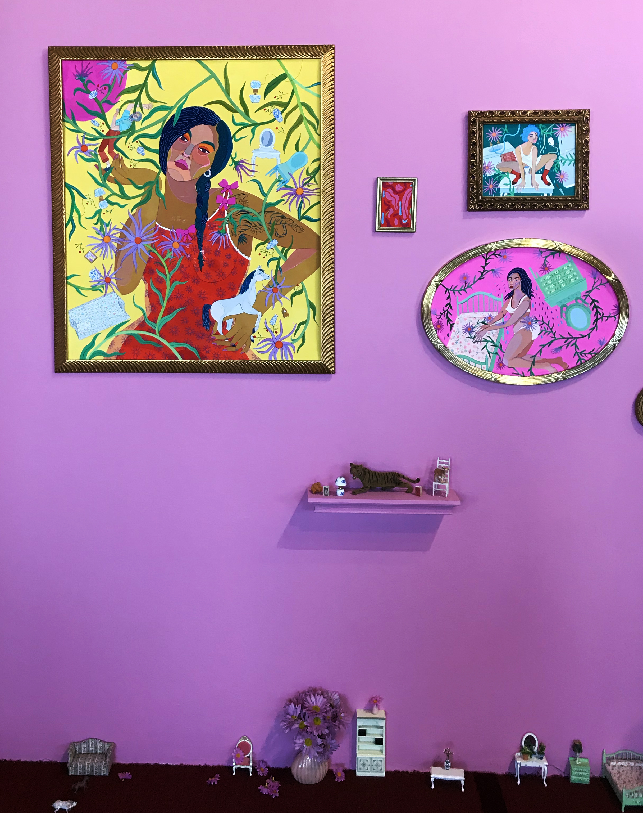
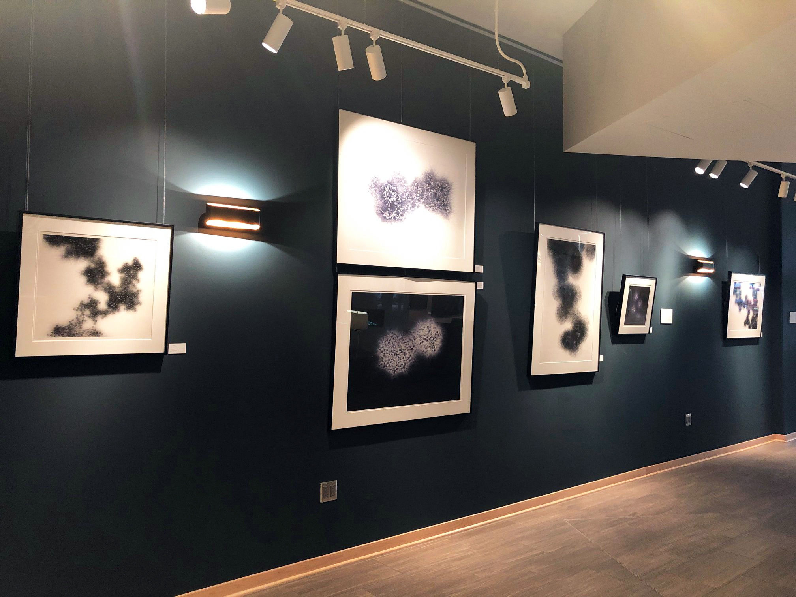
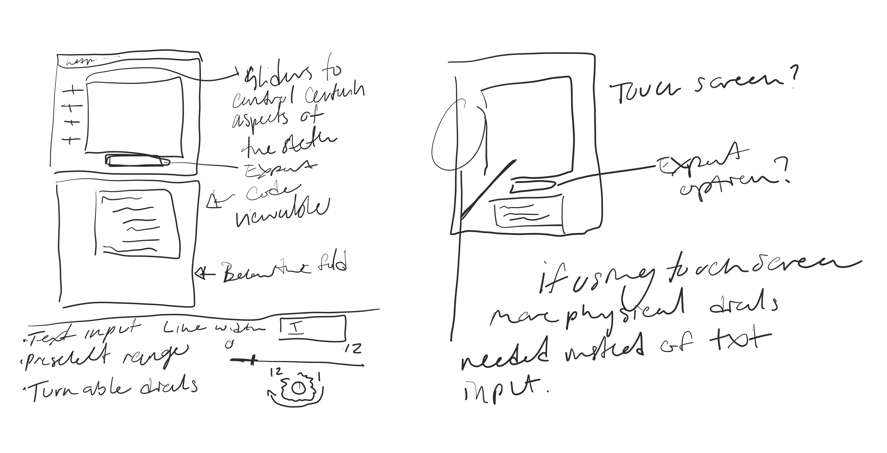

A hybrid Exhibition to highlight how digital exhibit companion pieces can increase engagement, accessibility and understanding of artists' work.
Problem Statement
The Coronavirus has brought the physical art world to a halt.1 Since the onset of COVID-19, 92% of Minnesota Art Organizations have reported canceled events, with an estimated loss of 2,351,612 attendees. Americans for the Arts has found that out of those Minnesota organizations, 11% are not confident their organizations will survive the impact of COVID-19.2
In response to the changing time, many organizations are quickly increasing their online presence and making artwork more accessible through digital means than ever before. The rise of online viewing rooms and virtual tours are becoming more and more common, from large and small organizations alike.3
Despite this, there will always be a desire for collectors and art viewers to have an in-person experience and to be able to physically interact with works of art. The transition from Coronavirus to a new normal will likely reveal a new hybrid exhibition approach of physical and digital in the future.4 For artists delving into New Media Art, this presents a special opportunity to expand their influence and enhance viewers understanding of their work and process.
The aim of my capstone project is to show how digital exhibition companion pieces can increase engagement and accessibility, specifically in regards to New Media artists' work, in times of social distancing and beyond, creating tools that can be used both online and in the exhibition space to engage the viewers and enhance the understanding of their work.
Questions and Inspirations
In February 2020, I attended the CoExhibition’s Interior Violence, the first solo exhibition of artist Meg Lionel Murphy’s work. From the pink walls to the delicate details along the floor and various points on the walls, I was transfixed by the way these details created an intimacy with the paintings and how they enhanced my overall experience of the artist’s work.
 Fast forward a few weeks and the world found itself in a much different reality, where attending in person exhibitions was no longer possible, due to a stay-at-home order during the rise of the COVID-19 pandemic.During this stay-at-home order, my mind wandered back to the show, and to the show that was supposed to follow, which, of course, I never had a chance to see. The impact on the gallery, as well as the artists, felt significant.
With these restrictions in place, I began to notice how unengaging a traditional exhibition website could be. They typically hold a brief overview of the work with single images and the title and prices below the piece. With the recent exhibition in mind, I wondered if you could bring in the doll houses and horses that line the floor and shelves next to the paintings through digital means. Could there be digital coloring books, animated horses galloping as you scroll through the page?
This is where the idea for my capstone project originated - how to create an engaging experience on the website exhibition page that allows a viewer to get a glimpse of the details that make the exhibition or work special.
Tools and Process
I took this concept and set out to explore it with my own work. I took in the feedback from my previous exhibition, Infinite Abyss in Motion Millyard show at Stonebridge Lofts. The works featured were my Computational Drawings created with p5.js. Some of the viewers had trouble understanding how the pieces were made. Were they drawings? Were they made by the computer? If so, how?
For my computational designs, I felt an appropriate digital companion piece to a physical exhibition would be a drawing tool that aims to help the viewer get an inside look at how these drawings are being created. The drawing tool would also allow the viewer to interact with the work, seeing firsthand how the designs can be transformed and altered with just a few small changes, thus creating an active versus passive viewing experience.
I have been working with p5.js and exploring Computational Aesthetics since my introduction to the topic during the Experimental Interaction course taught at MCAD in 2015.
What I found so engaging was the ability the program gave me to create delicate lines, similar to a pencil drawing. I wanted to build this drawing tool with my aesthetic in mind and demonstrate why I find the world of computational drawings to be so transfixing.
My initial thoughts are sketched above, where the tool could be experienced in person or at home on-line. The user will interact by means of sliders or knobs to control the sketch.
Drawing Tool Prototype First Phase:
Research to expand on complexity and create the physical pieces for the exhibition:
Full process can be found documented on my Progress Platform
User Testing and Research
Deliverables
Drawing Tool and Exhibition Page
Summary
Endnotes
- "The Economc Impact of Coronavirus on the Arts and Culture Sector," Americans for the Arts, accessed Septerrber 23, 2020, https://WV.Jw. americansforthearts. org/by-t opic/disaster-preparedness/the-economc-irTl)act -of -coronavirus-on-the-arts-and-culture-sector
- Dotnnic-Madori Davis, "No more ritzy galas, dinner parties, or jet-set fairs: The art world is cotnng to terms with a 'shelter-in-place' market. 5 insiders reveal how the in-dustry is faring - and their hopes for what's next," Business Insider, June 13, 2020, https://WV.Jw. businessinsider. corn'how-5-key-art -industry-insiders-are-handling-coronavirus-pandetTic-2020-5
- Arrericans for the Arts, "The Economc Impact of Coronavirus on the Arts and Culture Sector."
- Arrericans for the Arts, "The Economc Impact of Coronavirus on the Arts and Culture Sector."